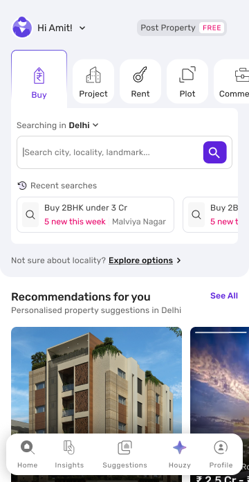

The psychology behind India's first conversational AI for property search: 11 principles, told through the eyes of one buyer.
Press → or click to begin

One rule shaped every screen: a predictable shell around unpredictable answers. The header, composer, cards and error states never change shape, so whatever the AI says lands somewhere familiar.
Houzy doesn't replace search. It runs alongside it, and every surface hands it context.
Two features where the ideal design didn't fit the release: the gallery and the property page. What shipped instead, and what testing taught us.
The one dip, the photo redirect, is the moment testing exposed. Answering photos in the chat lifted it back up.
Every answer ends one tap from a lead: on cards, brochures, the gallery and the property page. The north star is chat sessions where a buyer contacts a seller.
A search and discovery mode. Houzy at every touchpoint, on app, mobile web and desktop.
The ideal, shipped. The native gallery and a property page designed for conversation.
Deeper conversations. Streaming answers, floor plans, price trends, and memory of what the buyer already said.